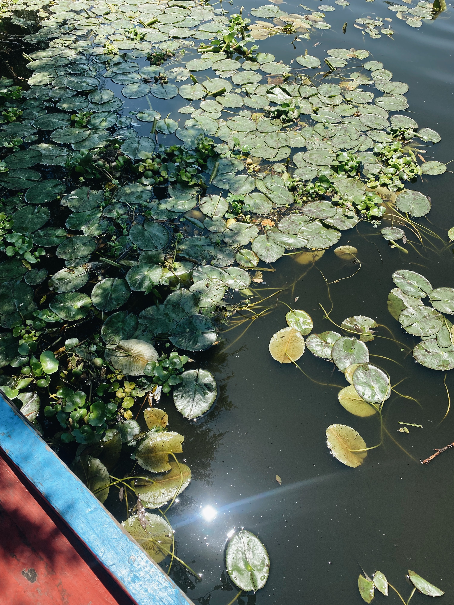
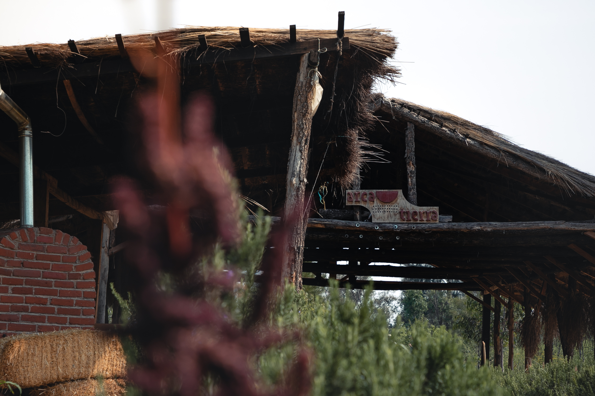

Hablar de Xochimilco y sus chinampas es adentrarse en múltiples significados: son un ecosistema completo y, a la vez, un oasis dentro de la CDMX, una de las más grandes del mundo. Son, en esencia, islas artificiales construidas por las personas sobre el lago de Xochimilco y el de Chalco para producir alimentos.
Estos lugares son tecnología agrícola milenaria y un ejemplo de cómo se puede convivir armónicamente con la naturaleza y también participar en el desarrollo y diversificación de la vida. Sus numerosos canales y chinampas fueron clave para el comercio y la alimentación desde la antigüedad mesoamericana, además de que fueron el único sistema de producción agrícola que rendía todo el año.
"Xochimilco" es un nombre náhuatl que quiere decir "En el lugar de la sementera florida" y fue nombrado Patrimonio Cultural de la Humanidad por parte de la Unesco en 1987 y fue declarado como uno de los sitios que son Sistemas Importantes del Patrimonio Agrícola Mundial (Sipam) por la Fao. Además, es un humedal de importancia mundial Ramsar y Área Natural Protegida.
Cuenta con tesoros ecológicos y biodiversos, pero también con monumentos, tradiciones y raíces culturales. Es un espacio fundamental para la ecología del Valle de México y si bien sus trajineras ornamentadas son atractivo turístico, existen diversos retos que se viven en la actualidad.

¿Qué factores amenazan las chinampas de Xochimilco?
Diferentes factores ponen en riesgo a estos espacios naturales:

- Aproximadamente son 2,200 hectáreas de la zona chinampera, pero más del 60 % está abandonada, además de que pocos siembran sin agrotóxicos.
- Más de 1,000 hectáreas de chinampas se encuentran en abandono y no son productivas, es decir, no producen alimentos.
- La mancha urbana ocupa el 17 % de esta área causando contaminación al agua por un mal manejo de los desechos orgánicos e inorgánicos.
Puedes hacer tu súper semanal con nuestras canastas de alimentos mexicanos que crecen en las chinampas o en otras comunidades campesinas.
Conoce más de Xochimilco en nuestras experiencias de turismo rural y gastronómico: contáctanos y apoya a la conservación de esta zona.
La labor de arca tierra en Xochimilco

En arca tierra buscamos la recuperación ecológica y cultural de la zona chinampera de Xochimilco por medio del apoyo a quienes trabajan las chinampas de manera agroecológica, produciendo alimentos naturales y de temporada desde 2009.
De acciones como estas depende la conservación de la zona y de su importancia ecológica y cultural, al mismo tiempo de que generamos economía local y producimos alimentos naturales, mexicanos y de calidad.

Trabajamos en los ejes ecológico, agrícola, económico, tecnológico y social. Hoy en día hemos alcanzado resultados que hacen viable la recuperación de la zona chinampera, desde la limpieza del agua y suelo hasta la comercialización con esquemas justos.
Nuestro proyecto se caracteriza por la atención que tenemos hacia el proceso agroecológico y la cadena de valor que no deja una sola de sus etapas desatendidas. Las personas agricultoras de nuestra red forman nuestra razón de ser y misión.
La Chinampa del sol
Visitar la Chinampa del Sol te permitirá conocer al equipo de personas chinamperas y del personal de arca tierra, apreciarás las más de 50 variedades que se siembran en cada temporada y vivirás la experiencia de estar en esta zona.

Ir a las chinampas del proyecto es al mismo tiempo vislumbrar el pasado de nuestra ciudad y también presenciar el futuro de nuestra alimentación. Mientras haya personas chinamperas, las chinampas seguirán existiendo y mientras ellas existan, habrá Xochimilco.
¿Qué hemos logrado en la zona chinampera de Xochimilco?
A través de este modelo de negocio, arca tierra ha logrado:

- Restaurar cinco hectáreas de zona chinampera a través de la recuperación y regeneración de suelo con prácticas agrícolas de captura de carbono y aumento en biodiversidad (medido en las chinampas por presencia de ciertas especies).
- Implementar seis biofiltros con apoyo de la Unam y el Cinvestav para limpiar el agua en las chinampas y fomentar las condiciones del entorno para la reincorporación del ajolote. Esta es una especie que sirve como bioindicador de que el ecosistema está sano.
- En estos biofiltros se utilizan plantas acuáticas de la zona como amollo, chilito, tule y cola de borrego, además de minerales como tezontle y grava que evitan que entren peces como las carpas y tilapias al apantle o canal secundario de tal forma que sí se pueda limpiar el agua de los canales.
Nuestro impacto social y ambiental
En general, este se traduce en:

- La conversión de 24.5 hectáreas en áreas productivas enfocadas en la agricultura regenerativa tanto en CDMX como en Hidalgo y Estado de México.
- El acceso de las personas agricultoras a una hectárea productiva en la red en la que pueden generar ingresos netos de hasta 347,000 pesos por año.
- Apoyo en la bancarización de personas productoras.
- La transferencia de tecnologías digitales (software de siembra) y métodos de agricultura regenerativa.
- Profesionalización de la red por medio de fortalecimiento de capacidades organizativas y articulación de red en equipos de trabajo y cooperativas.
Proyectos a futuro: Iniciativa Agroecológica Xochimilco (IAX)
La Iniciativa Agroecológica Xochimilco A.C. es presidida por Lucio Usobiaga, fundador de arca tierra.
IAX se dedica a la capacitación y transferencia de conocimientos y técnicas a familias campesinas. Asimismo, trabaja en biorremediación de agua y suelo, especialmente en Xochimilco.